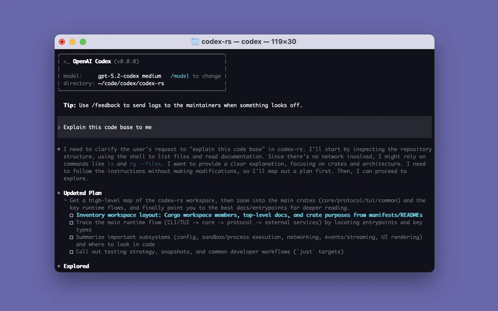
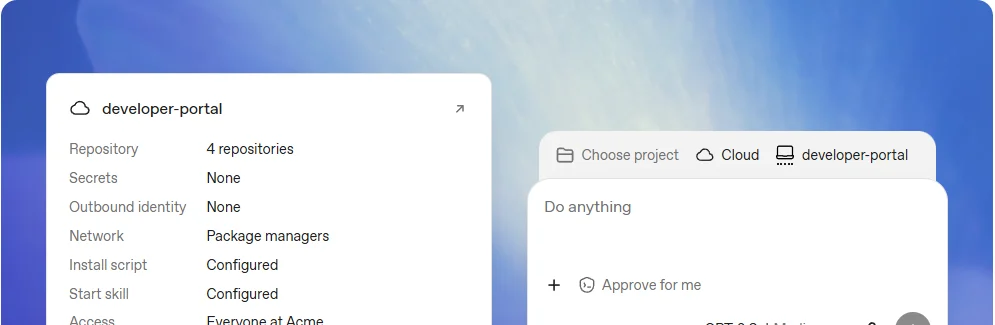

CodexOpenAI
OpenAI 的编程智能体，2026 年 7 月并入 ChatGPT 桌面端：和办公 Agent“ChatGPT 工作”共用一个应用、一套订阅，正在从开发者工具变成人人可用的生产力工具。
一页结论
- 增长最快的编程 Agent：JetBrains 调研中，工作中使用 Codex 的职业开发者从 2026 年 1 月的 3% 升到 5～7 月的 16%，认知度从 27% 升到 65%S8
- 并入 ChatGPT，定位变宽：7 月 9 日 Codex 应用并入新的 ChatGPT 桌面端，和办公 Agent“ChatGPT 工作”放在同一个应用里，免费用户也能有限使用；OpenAI 称约 20% 的 Codex 用户是知识工作者而非开发者S6S9S11
- 开源 CLI 是社区抓手：Codex CLI 以 Apache-2.0 开源，GitHub Star 超过 13 万；最新版 0.166.0 发布于 10 月 29 日S7
- 额度政策反复：9 月宣布下调 Pro 200 的额度，10 月 29 日撤回并把 Pro 100 / 500 的额度翻倍；12 月起 ChatGPT 工作与 Codex 将共用一个用量池S5S12
- 只用自家模型：默认使用 GPT-6.1 Sol 等 OpenAI 模型；CLI 可经 Amazon Bedrock、Google Vertex AI 调用 OpenAI 模型S5S1
01公司介绍
| 项目 | 内容 |
|---|---|
| 公司 | OpenAI，营利部门 2025 年 10 月改组为公益公司 OpenAI Group PBCS10 |
| 官网 | openai.com；Codex 开发者页 developers.openai.com/codexS1 |
| 总部 | 美国旧金山S10 |
| 创立 | 2015 年，CEO 为 Sam AltmanS10 |
| 团队 | 约 4,500 人（2026 年）S10 |
| 融资 | 2026-04 完成 1,220 亿美元承诺资本的融资，投后估值 8,520 亿美元S10 |
| 上市 | 2026-06 确认已向美国证监会递交上市申请，Altman 9 月表示推迟到 2027 年S10 |
| Codex 历程 | 2025-04 开源 CLI；2025-05 云端 Agent 预览；2026-02 桌面应用；2026-07 并入 ChatGPT 桌面端S9 |
02公司战略
OpenAI 的打法是把编程 Agent 和办公 Agent 合进 ChatGPT 这个超级入口，用一个订阅覆盖所有人。
- 超级应用：2026 年 3 月宣布把 ChatGPT、Codex 和 Atlas 浏览器合并成一个桌面应用；7 月完成合并，Atlas 停止开发S9S6
- 从开发者扩到所有人：Chat、Work、Codex 三种模式向包括免费版在内的所有计划开放S6
- 用开源 CLI 和 App Server 做生态：CLI 开源，App Server 协议让第三方把 Codex 嵌进自己的产品；JetBrains IDE 已内置 CodexS7S1S8
- 一个用量池：12 月起 ChatGPT 工作和 Codex 共用额度，进一步弱化两者的边界S12
03产品定位
| 项目 | 内容 |
|---|---|
| 一句话定位 | 用 CLI、IDE 插件和云端自动化加速开发的编程智能体S1 |
| 目标用户 | 开发者为主；并入 ChatGPT 后也面向知识工作者S6S11 |
| 核心场景 | 在本地或云端读代码、改代码、跑命令，审查 PR，扫描安全漏洞S1S5 |
| 与 ChatGPT 工作的分工 | 同一桌面应用里，Codex 负责编程，“ChatGPT 工作”负责文档、表格、演示和跨应用任务S2 |
![新的 ChatGPT 桌面端（官方文档配图）：左侧是 Codex 的项目与会话，右侧可以直接打开文档等文件[S2]](img/codex-app.webp)
04产品与主要功能
Codex 的特点是“开源 CLI + 超级应用”：终端里是开源的 Agent，桌面上是和 ChatGPT 工作共用的工作台，云端可以长时间跑任务。
产品架构
交互入口
ChatGPT 桌面端（macOS / Windows，Linux 预览）Codex CLI（开源）IDE 插件（VS Code、JetBrains、Xcode）网页与手机Slack / Microsoft Teams 中的 @ChatGPT
Agent 能力
本地与 SSH 会话子 AgentCodex Cloud 云端任务Code ReviewCodex Security Cloud 漏洞扫描定时任务dot 全天候 Agent（Pro）
扩展层
AGENTS.md 项目说明Skills插件MCPApp Server（嵌入第三方产品）Codex SDK
运行环境
本地沙箱（含 Windows 原生沙箱）云端可复用环境（每个任务独立工作区）电脑操作与内置浏览器
安全与管控沙箱与审批网络访问控制工作区角色与权限模型可用范围自托管配置服务器
核心功能


图片来自 Codex 开源仓库与 ChatGPT 官方文档，2026-11-01。
12 项能力评估
05商业模式
Codex 不单独售卖，包含在 ChatGPT 各档订阅里，档位越高额度越多。
| 计划 | Codex 与 ChatGPT 工作 |
|---|---|
| Free / Go | Codex 有限使用；桌面端“ChatGPT 工作”有限使用S4 |
| Plus $20 | 更高的 Codex 用量；桌面、网页、手机都能用 ChatGPT 工作S4 |
| Pro $100 起 | 更长的 Codex 与工作会话、dot 全天候 Agent；Pro 500 可用 Astra UltrafastS4S5 |
| Business / Enterprise | 按席位计费，可购买额度获得更多用量S4 |
额度是竞争焦点：9 月 29 日 OpenAI 通知下调 Pro 200 的额度，10 月 29 日撤回，同时把 Pro 100 和 Pro 500 的额度翻倍S5；12 月起 ChatGPT 工作与 Codex 合并为一个用量池S12。在编程 Agent 的竞争里，“同样的钱能用多少”已经和模型能力同等重要（分析意见）。
06上下游与渠道
上游：算力
上游：模型
OpenAI 自研 GPT 系列，Codex 只用自家模型S5
Codex
ChatGPT 桌面端、CLI、IDE 插件、Codex Cloud
渠道
下游客户
开发者与企业工程团队并入 ChatGPT 后扩展到知识工作者S11
07市场表现
08用户口碑
以下来自 Hacker News 近 90 天的高分讨论（C 级来源，只反映社区情绪，不作为事实依据）。
09安全合规
10近期动态
11潜在风险分析意见
| 风险 | 表现 | 可能程度 |
|---|---|---|
| 定位变模糊 | 开发者工具并入大众应用，专业开发者可能觉得产品不再为自己设计S13 | 中 |
| 额度政策反复 | 一个月内宣布下调又撤回，用量池合并在即，影响重度用户的信任S5S12 | 中 |
| 默认行为与透明度 | CLI 默认安装常驻后台进程等做法引发社区不满S13 | 中 |
| 单一模型绑定 | 只用 OpenAI 模型，模型表现波动没有替代S5 | 中 |
| 亏损与资本开支 | 2025 年经营亏损约 209 亿美元，同时签下多笔大额算力合同，上市推迟到 2027 年S10 | 中 |
“可能程度”为基于现有公开信息的判断，不是量化预测。
12综合结论分析意见
优势
- 增长最快：使用率半年翻了五倍
- ChatGPT 的超大用户池与品牌
- 开源 CLI 带来社区与生态
劣势
- 职业开发者使用率仍落后 Claude Code
- 产品形态频繁调整，额度政策反复
机会
- 编程与办公合一，覆盖知识工作者
- 通过 App Server 嵌入第三方产品
威胁
- Claude Code 在职业开发者中领先
- 社区对默认行为与透明度的质疑
对 AI 产品团队的启示
- 入口合并是双刃剑：把编程 Agent 放进超级应用能借到海量用户，但会牺牲专业用户的专属感。要想清楚核心用户是谁，再决定合不合。
- 开源客户端是低成本的护城河：开源 CLI 让社区贡献、让企业放心审计，也让第三方愿意集成。
- 额度是产品体验的一部分：同样的模型，额度给得宽不宽直接决定用户留不留；调整额度要提前沟通，反复变动的代价很高。
- 默认设置要尊重用户：常驻后台、自动更新这类默认行为，即便有技术理由，也要让用户清楚知情。
信息缺口
以下信息未找到可靠的公开来源，本报告不做推测。
- Codex 单独的收入与付费用户数，OpenAI 未披露
- 7 月之后 Codex 单独的每周使用人数：此后只披露与 ChatGPT 工作的合计数
- Business 与 Enterprise 的席位价格（官网未公开标价）
- Codex 与 GitHub Copilot（同属微软生态）之间的合作边界
来源
A 官方 · B 权威媒体或第三方 · C 社区（仅用于口碑与线索）。访问日期均为 2026-11-01。
- S1 · ACodex 文档索引（ChatGPT 文档站）OpenAI
- S2 · AChatGPT desktop appOpenAI 文档
- S3 · ACodex CloudOpenAI 文档
- S4 · AChatGPT 定价OpenAI
- S5 · AChatGPT release notesOpenAI 帮助中心 · 2026-09 至 2026-10
- S6 · AChatGPT is now a partner for your most ambitious workOpenAI · 2026
- S7 · Aopenai/codexGitHub
- S8 · BAI Coding Agents: Adoption TrendsJetBrains Research · 2026-08
- S9 · BCodex (AI agent)（汇总路透社、《财富》、《连线》等报道）Wikipedia
- S10 · BOpenAI（汇总公司公告与媒体报道）Wikipedia
- S11 · BOpenAI's Codex and ChatGPT Work just crossed 10 million weekly usersStartup Fortune · 2026-07
- S12 · BOpenAI Will Make ChatGPT Work and Codex Share One Usage Pool in DecemberStartup Fortune · 2026-10
- S13 · CHacker News 讨论：CLI 后台进程 / 内置 LibreOffice / Linux 预览 / 额度合并Hacker News · 2026-08 至 2026-10